那覇市｜炭火居酒屋
今日の疲れは、
炭火の前で。
焼き鳥と島の料理を、カウンターでも、仲間との宴会でも。
17:00〜23:00（L.O. 22:15）／水曜定休
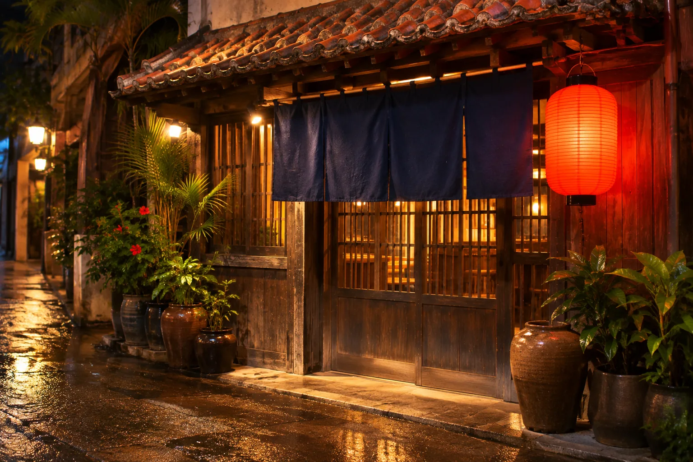
路地の赤提灯が、
目印です。
仕事帰りに一人でふらっと。週末は家族や仲間とゆっくり。炭の香りと、島の器と、にぎやかな声のある店です。
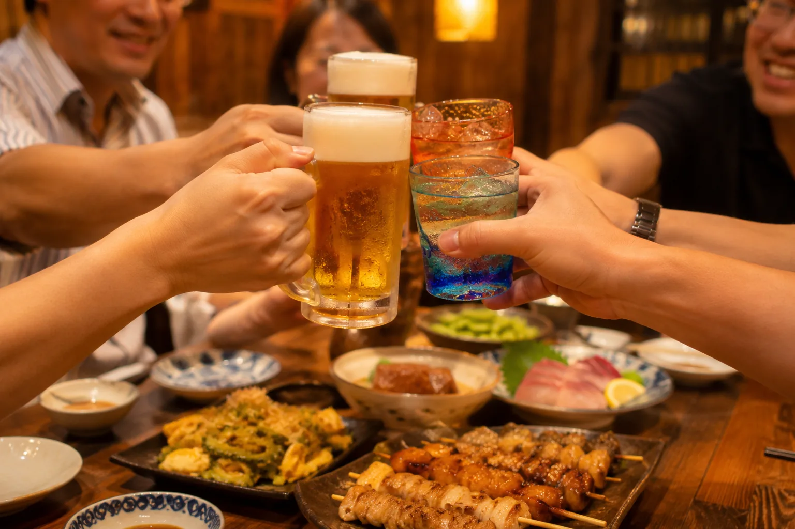

一本ずつ、
目の前で焼きます。
- 昼のうちに、串打ち大きさをそろえて、一本ずつ串に刺します。
- 炭火で、じっくり返しながら、外は香ばしく、中はふっくら。
- 塩か、たれで焼きたてを、そのままお席へお運びします。
お品書き
まずは、この三品
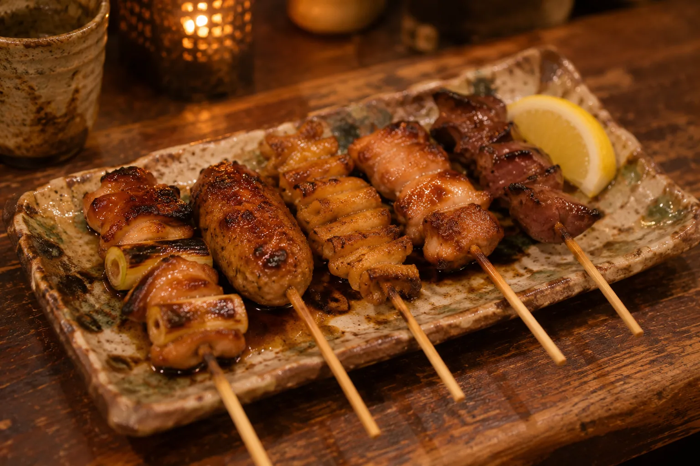
炭火焼き鳥 盛り合わせ
¥8805本 塩・たれ

ゴーヤーチャンプルー
¥780島豆腐と卵、ポークで

自家製ジーマーミ豆腐
¥480もっちり、甘めのたれで
島の料理と締め
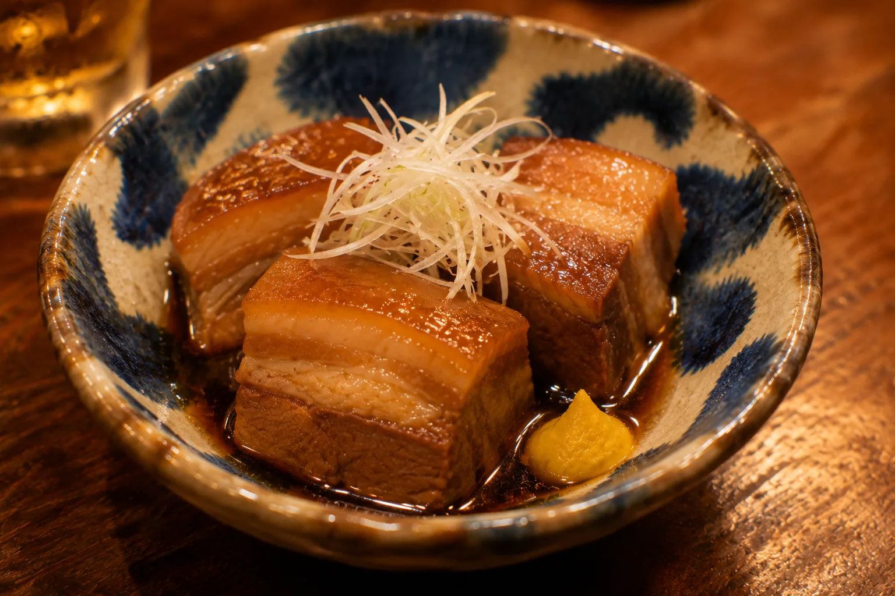
ラフテー
¥850三枚肉をやわらかく煮込みます
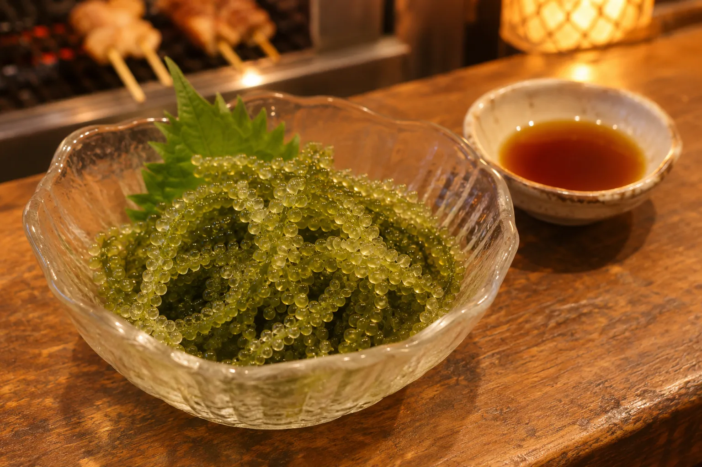
海ぶどう
¥680ぷちぷちの食感をポン酢で
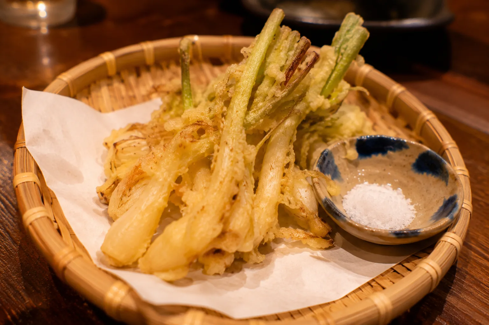
島らっきょうの天ぷら
¥620揚げたてを塩で
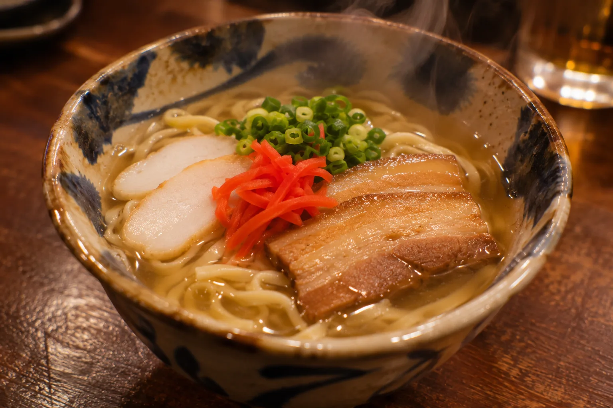
沖縄そば
¥680締めの一杯に
お飲み物
生ビール
¥580よく冷えたジョッキで
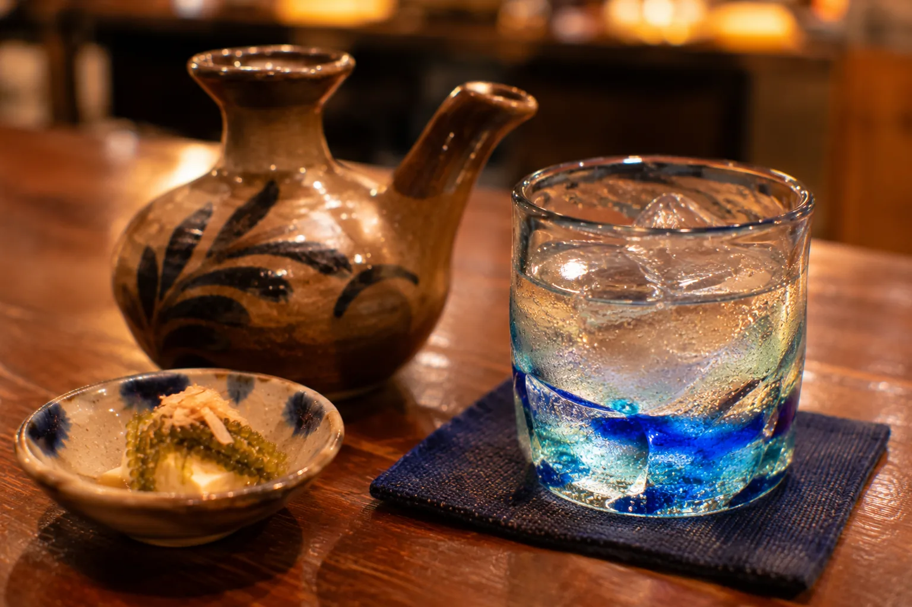
泡盛（グラス）
¥450水割り・ロックで
シークヮーサージュース
¥380※料金は税込です。写真はイメージです。すべて架空の内容です。
お席
全42席。人数や過ごし方に合わせてお選びください。
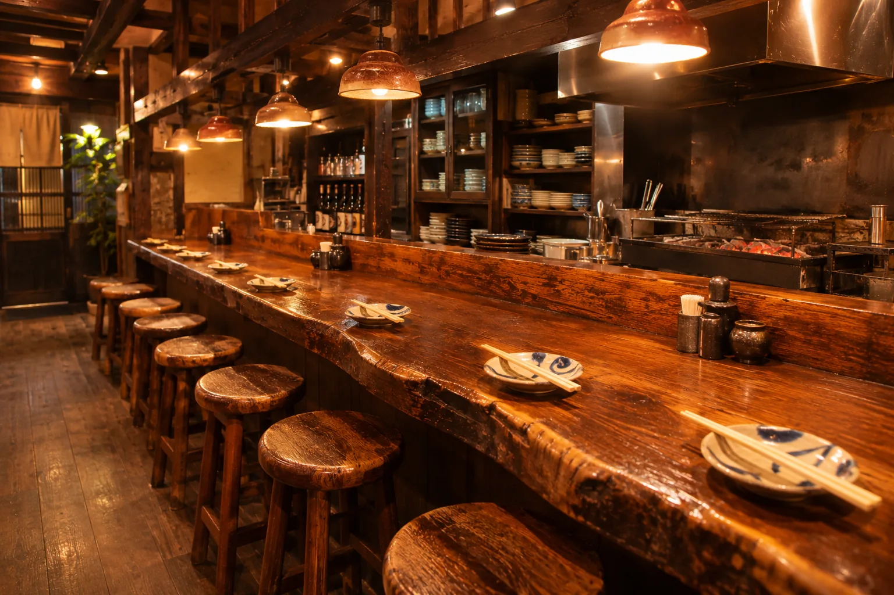
カウンター 8席
焼き台の近くで、焼き上がりを待つ時間も楽しめます。お一人や、お二人に。
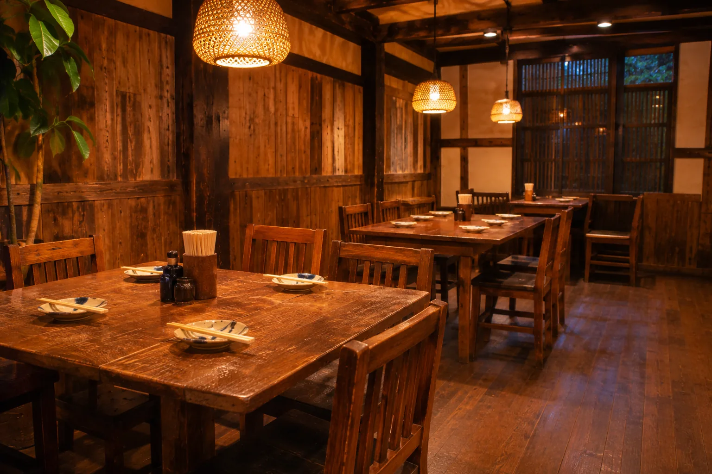
テーブル 22席
仕事帰りの集まりや、ご家族の食事に。人数に合わせてご案内します。
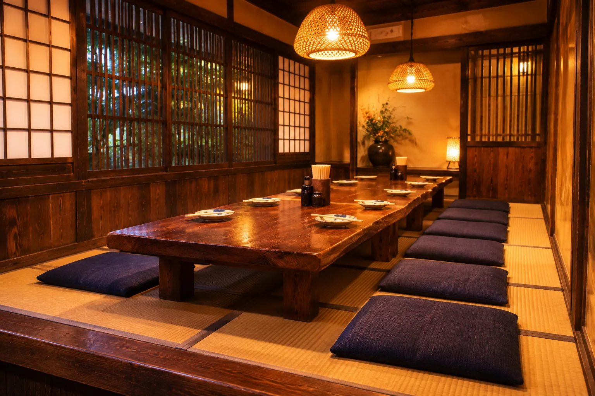
座敷 12席
靴を脱いで、ゆったりと。小さなお子さま連れや、宴会にどうぞ。
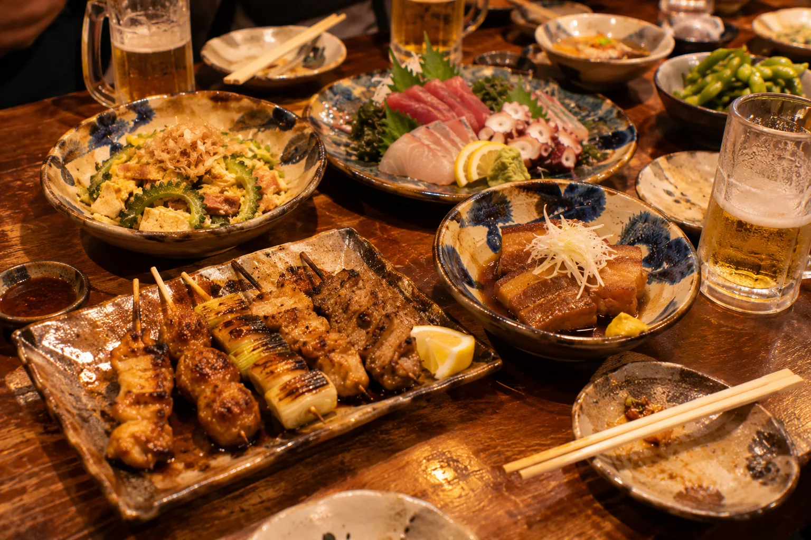
人数を入れると、
合計がわかります。
人数
合計の目安¥14,000
※2名様から、30名様まで。前日までにご予約ください。税込・架空の内容です。